Processbook
Our project is focusing on creating a tool to allow viewers to better understand the availability, reliability, and performance of real estate properties, to be used by investors, stakeholders, and researchers with interests in this field. Our project is modeled on the idea of visualizing an REIT, a trust that trades in bundles of real estate properties in much the same way that a mutual fund trades stock market shares. With such a tool, we would be able to visualize using a 3D map of actual locations which properties make up these trusts and how those individual properties are affecting the profitability, or lack thereof, of that trust. Not only could someone use this tool to map out the performance of currently existing REITs, but the interactive nature of the tool would allow viewers to build their own trusts out of certain properties and compare the performance of that bundle to others. Ultimately, such a tool would be a huge benefit to investors wanting to further understand the REIT market and how they can invest properly in trusts which are growing, as well as allowing others to see major trends in the real estate market of a specific city over time.
Inspiration The ultimate goal for this project is to provide an intuitive and interactive online platform for investors, stakeholders and researchers who want to learn more about real estate properties in a virtual built environment with assistance of a comprehensive dataset. The desired result should be a website that renders the existing city with an additional layer of data visualization so the audience will get a better understanding of the data in context of geographical environment. Existing open-source map provider such as vizicities, and cybercity3d offer compelling 3D rendering of cities, and may serve as great platform for wrangling data. The existing visualizations of real estate value often tends to illustrate property value in a broad and general way, thus does not give insights to the investor about how each individual property perform in comparison to the general market trend. This provides an opportunity for this project to investigate more about individual property's performance based on available data.
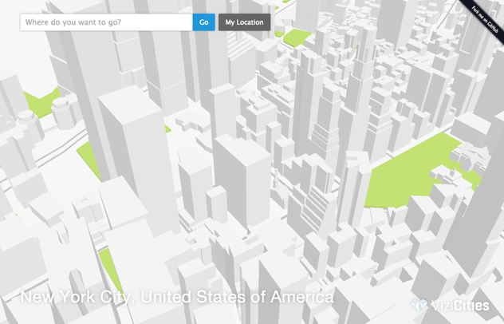 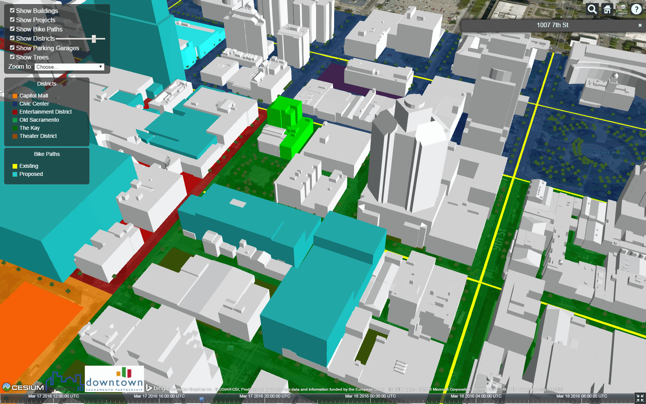 Targeted ProblemCities in recent years have seen a surge of population moving back downtown. Most noticeably, young professional millennials are more and more inclined to live close to work. This contributes to the process of reurbanization, and it will help governments to counter the problem of inner city decline and gentrification. Due to such phenomena, revitalized cities will generate more income with increasing demand in real estate. However, new development in land is increasingly restricted and difficult as well. Therefore, the profit will not go into other larger property development due to concentration of demand in premium market. Thus channeling the profit to the general public and spreading the capitals across different industries become progressively important to city development, economic structure and social welfare. “Cities can provide for everybody only when they’re created by everybody”, said Bill Oates CIO at city of Boston is an accurate depiction of what should be the future of city development. However, predominately propelled by economic trend and fiscal policy, real estate developers and lenders are not responsible for the needs of people. Millions of vacant apartments and ghost towns serve as living proof of an “irrational exuberance” that Prof. Robert Shiller often described. This ultimately leads to a question about how to involve people in the city development and what resources they may need to begin with.
Data ExplorationData is based on property tax assessment conducted yearly by City of Boston. The data set provides more than 160 thousands entries of properties with their physical attributes and basic financial summary. The value for each property is calculated based on Boston's property tax rate of 0.012% in 2015.
Data AnalysisProperty Ownership by Cities and Institutions
Both the treemap and chord diagram are meant to demonstrate the ownership and affiliation of the property. By creating a hierarchical structure that visualizes how each single property belongs to their respectable owner. Investors can gain knowledge about how these assets financial products are derived of perform in market. For our innovative visualization, we wanted to focus on the property bundle portion of our site, since the standard representations of property value are fairly intuitive with simple line or pie charts. For the bundling, we wanted a way to represent not only the fact that different properties belong to the same bundle, but also the types of properties that are in each bundle and the value of these properties over time. We could do this through a combination of two visualizations: an “unrolled” chordal map and an overlaid bar chart. Say you have a list of 10 selected properties and you want to compare different sub-bundles of those properties. On the left, we will have a flat x-axis, with each property lying along that axis and each having a bar representing the value of that property. If you choose a property bundle, we will link those properties below the visualization and show a bar to the right with the total value. However, if you want to compare this bundle to a different bundle from those properties, there will be a different set of links below this axis, and a different bar will appear on the right, either on top of or behind the other bar depending on which value is higher. There will also be a slider to control the year from which the value data is taken, so that people can compare these bundles across multiple years as well.
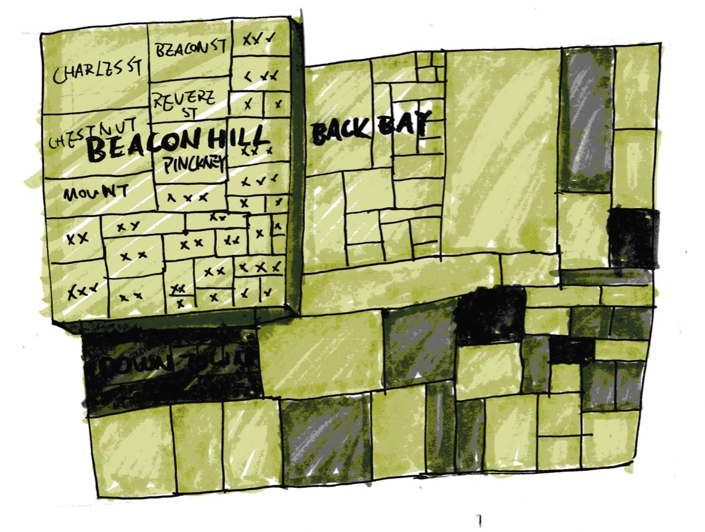Property Ownership by REITs
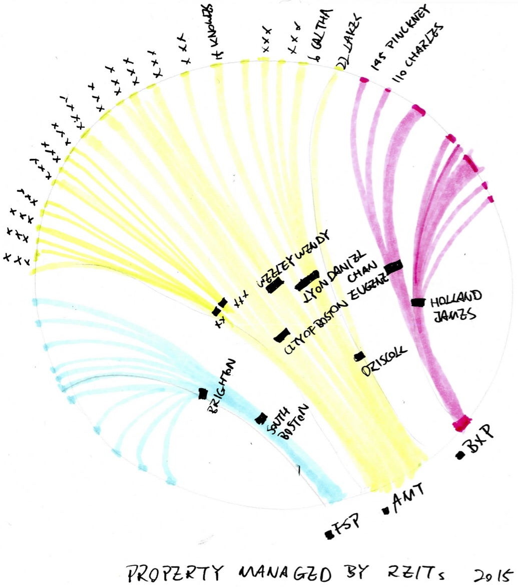Portfolio Simulator
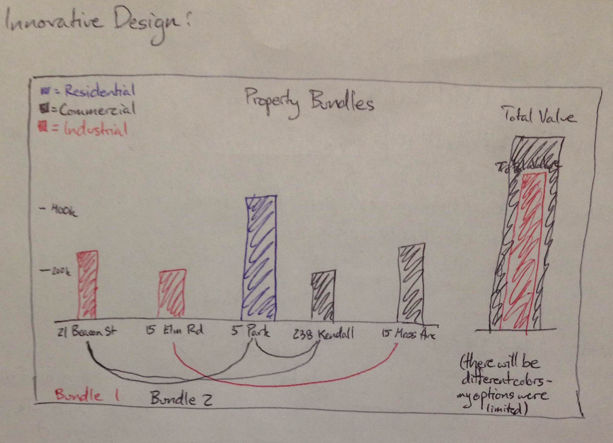 Design EvolutionIdeation and Sketches
In our initial sketches, we designed a large 3D cityscape that would dominate the homepage. Once individual property got selected by user, there would be comprehensive data visualization showing up in the side-navigation. Color would represent the value of each building, so it goes from low to high as from yellow to red. This would encourage user to select certain building and the selection would be registered in the side-nav within the visualization. After carrying out our expert evaluations in section on Thursday, April 7, we found that our site design had a few minor, easily fixable issues, as well as some larger concerns that involved re-thinking some of our initial concepts. Our re-design focused on both cleaning up the simpler issues and attacking the larger ones head-on. First, we cleaned up the less pressing concerns. One issue that was mentioned was that when selecting a property, the visualizations that would be brought up were too small to be seen properly. We decided to fix this through the use of a full-screen button, which you could click after selecting a property to view the more detailed property visualizations and data at a larger scale. Additionally, the suggestion was made that we include a tutorial or a splash screen to explain how to use our visualization effectively, since some of the process of selecting properties and creating property bundles seemed a bit difficult. This is easily accomplished in many different ways, but I think the best way is to include a Getting Started tab where we have a slideshow of screenshots explaining how to use the site. We can easily add this as a tab at the top of the page. A more serious concern was that it is hard to clearly understand the different tasks of the website and how they fit together – specifically, the site is designed to be used both by property buyers to understand the values of different homes and properties, but is also designed for investors to view the effect of purchasing a bundle of properties and understand how that bundle has (and will) perform over time. This can be dealt with by making a clear distinction between the “for investors” and “for buyers” sections of the site, which we currently were doing within a tab inside the map itself. One way to circumvent this is to have these tabs be at the top of the site, above the map, so that the visualization doesn’t get cluttered with extra information when you’re trying to accomplish one specific task. In this way, the purpose of the site can be made clearer and we can streamline the use of our site from the viewer’s perspective. We also need to re-think the map portion of our visualization. At this point, it seems unlikely that we will be able to successfully implement this map in 3-D as our designs have been hoping, but using a mapping library like Leaflet would make this map a very detailed and faithful representation in 2-D that we could use. Additionally, by adding layers on top of the map we can represent the different property values successfully and preserve the interactivity of the feature, by allowing people to click on different properties drawn with GeoJSON (or polygonal approximations). Finally, we will be clearer in the tutorial that the map contains data for Boston properties, so we can avoid questions when/if users happen to scroll all the way to a different city.
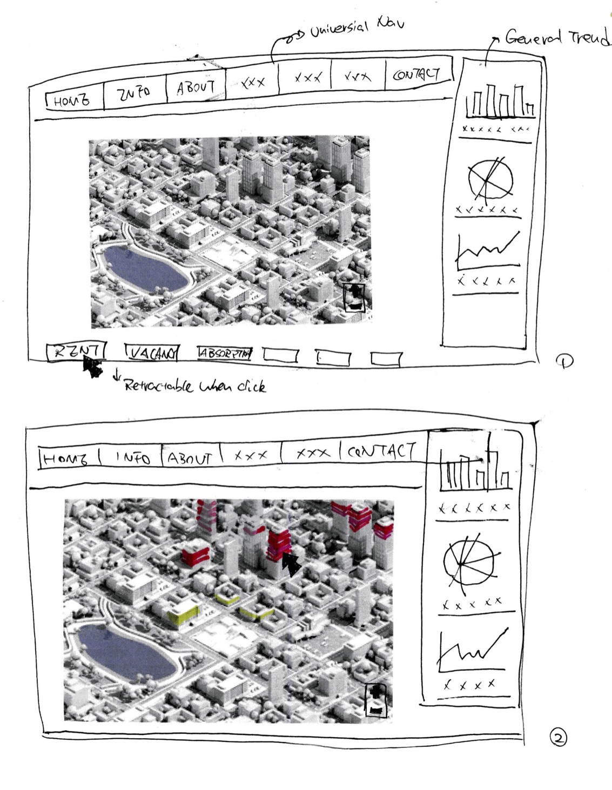 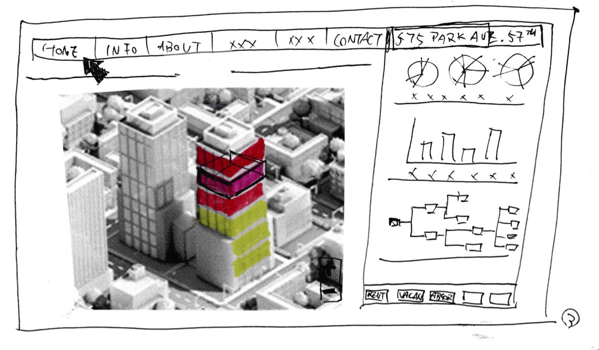
Website Design and Workflow
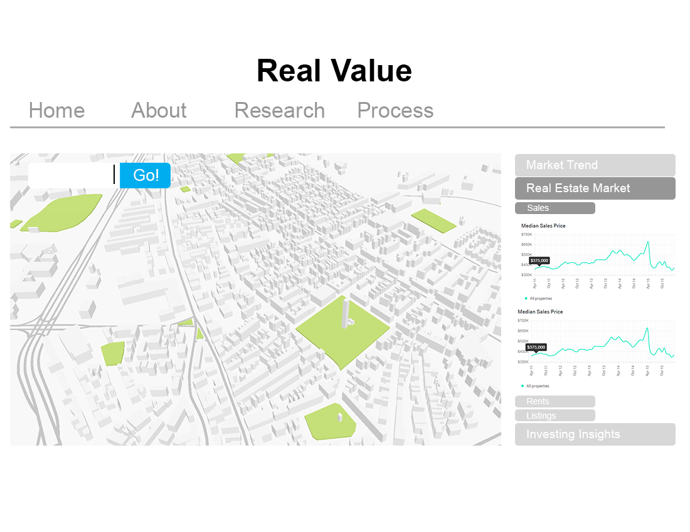 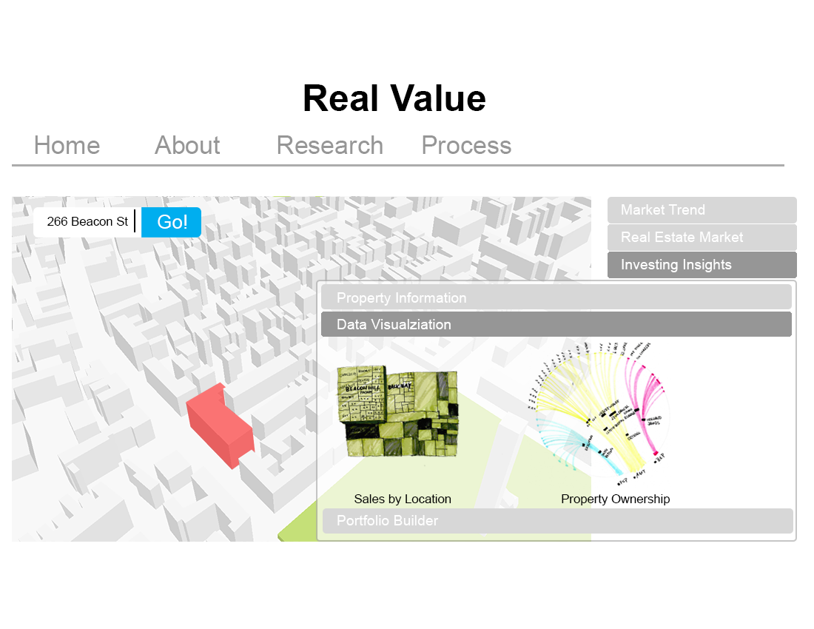 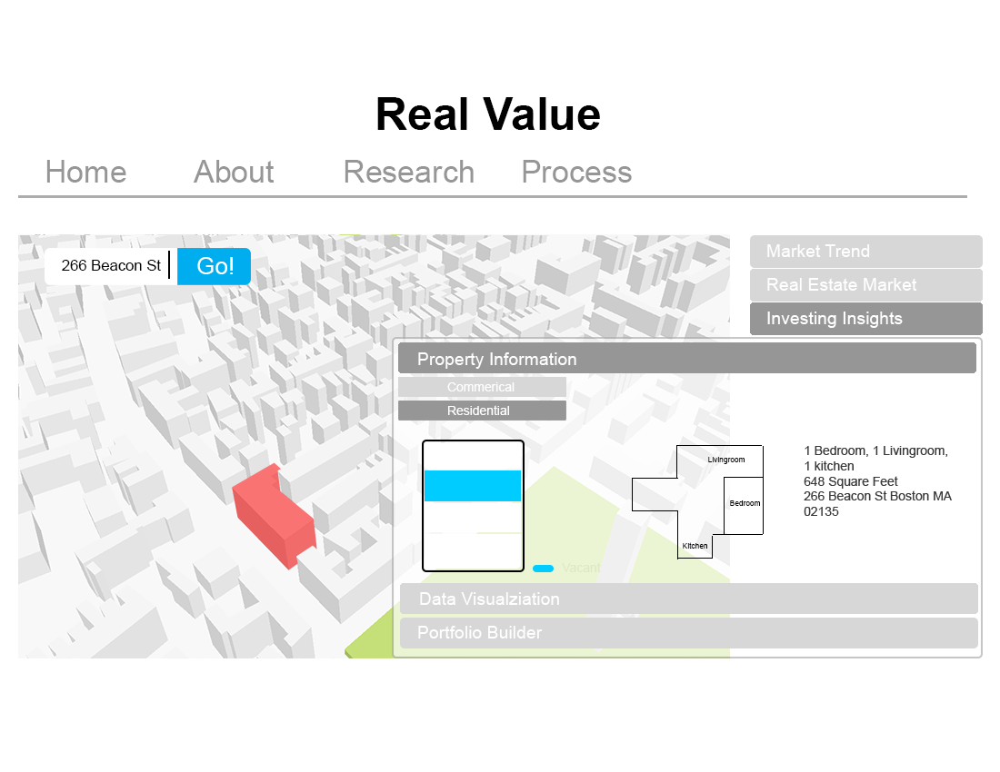 ImplementationTreemap
To create a hierarchical structure of our data, we adopted treemap. There are thousands of data points in the csv file, each however is owned by certain company or institution in certain city. Therefore, we tried to connect the dots to see who owns the most real estate in Boston in terms of value. The result is not surprising with Boston company topping all other cities with Chicago and New York following immediately. One noticeable thing however is that there seems to be a lack of presence for company in west coast. Most of the larger real estate properties are owned by east coast cities and companies. The streamgraph displays a trend of development regarding property type in the City of Boston. Each stream represents a property type, which has been developed quiet dispassionately throughout the years. Data is based on each type of property's constructed year. For example The deep blue color represents apartments and condos. Apparently , it has been dominating the market for many years. Recently, there seems to be a upward tenancy as well. The alluvial graph again aims to make connection between ownership and type of property and year constructed. The lines connecting each node vary in color and thickness, which represent strength of connection.
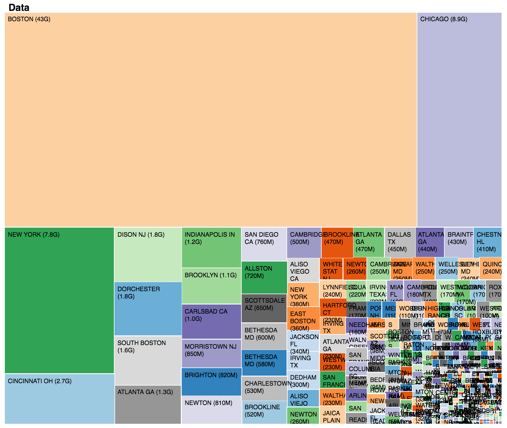Streamgraph
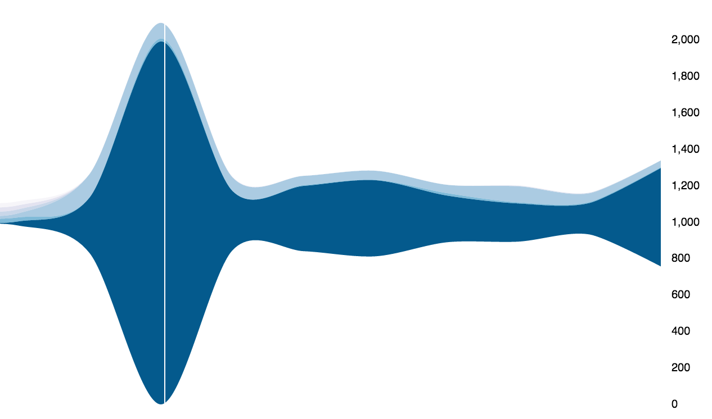Alluvial
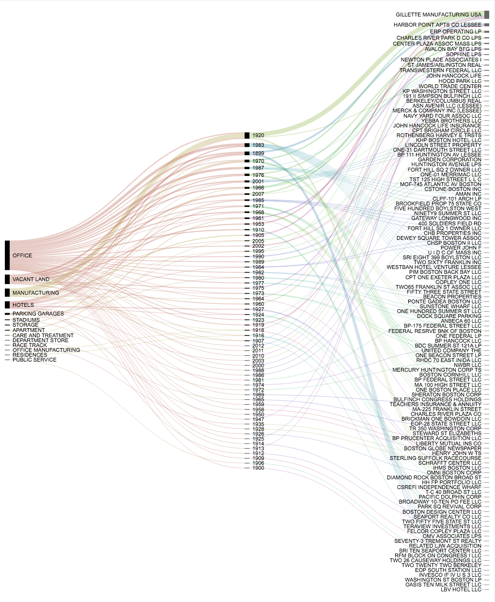 Evaluation